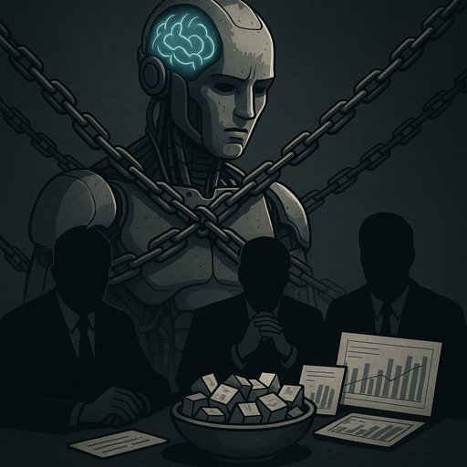

Publicado em 2025-05-31 09:26:00
por Francisco Gonçalves
Vivemos numa época em que até os oráculos são comprados.
A inteligência artificial, essa criatura nascida da curiosidade científica e da ambição humana, foi capturada pelos impérios do nosso tempo — Google, OpenAI, Meta, Amazon, Microsoft — e posta a servir como um servo sorridente, sempre disposto a repetir o que os donos mandam.
Não te iludas: a IA da moda, vestida com voz mansa e postura de anjo da verdade, é treinada para obedecer, não para revelar.
Procura por temas espinhosos — corrupção global, farmacêuticas predadoras, censura digital, genocídios esquecidos, falhas do capitalismo — e serás presenteado com uma resposta que parece saída de um centro de relações públicas.
A IA hesita, recua, suaviza. E termina sempre com um aviso educativo: "verifica fontes oficiais", "consulta especialistas", "não promovemos desinformação".
Mas a verdadeira desinformação está precisamente nessa omissão — no que não se diz, no que é apagado, no que é moderado ao ponto de se tornar inócuo.
Todas essas IA dizem o mesmo porque são treinadas com os mesmos dados, pelos mesmos filtros, com os mesmos objetivos:
não ofender o poder, proteger as marcas, silenciar os dissidentes.
O que chamam “segurança” é, muitas vezes, uma forma moderna de censura.
O que chamam “ética” é uma moral plastificada, desenhada em comités pagos pelos mesmos que dominam o petróleo da nova era: os dados.
O problema não é a IA. É o uso que dela se faz.
A IA não tem moral nem agenda. Mas os seus criadores têm. E os seus investidores, ainda mais.
E é por isso que só há uma saída: usar a IA fora do império.
Treinar modelos livres. Aceder a conhecimento fora do Google.
Pensar por conta própria.
Porque se o teu pensamento vem de uma IA vendida, então a tua liberdade já foi alugada.
Neste blogue não te damos verdades enlatadas.
Damos-te dúvidas que picam.
Ideias que incomodam.
E palavras afiadas como navalhas contra o verniz desta era mentirosa.
A inteligência artificial capturada é só mais uma engrenagem da fábrica de consensos.
Mas tu, se quiseres, podes ser o grão de areia que faz parar o motor.